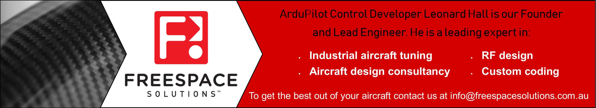

Tuning¶
With the default PID settings, ArduPilot will fly most RC vehicles safely right out of the box. To fly well, with tight navigation and reliable performance in wind, you’ll want to tune your autopilot parameters. The following topics shown you how.
[site wiki=”copter”] .. toctree:
:maxdepth: 1
Tuning Process Instructions <tuning-process-instructions>
Setting up for Tuning <setting-up-for-tuning>
Initial Tuning Flight <initial-tuning-flight>
Evaluating the Tune <evaluating-the-aircraft-tune>
Manual Tuning <ac_rollpitchtuning>
AUTOTUNE <autotune>
Input Shaping <input-shaping>
Throttle Boost <throttle-boost>
Transmitter Based Tuning <common-transmitter-tuning>
Configuring Notch Filtering <common-imu-notch-filtering>
Configuring In-Flight FFT <common-imu-fft>

[/site]
[site wiki=”plane”] .. toctree:
:maxdepth: 1
Tuning QuickStart <tuning-quickstart>
Automatic Tuning with AUTOTUNE <automatic-tuning-with-autotune>
Manual Roll, Pitch and Yaw Controller Tuning(firmware 4.1 and after) <new-roll-and-pitch-tuning>
Manual Roll, Pitch and Yaw Controller Tuning(firmware before 4.1) <roll-pitch-controller-tuning>
Navigation Tuning <navigation-tuning>
Cruise Speed Tuning <tuning-cruise>
TECS (Total Energy Control System) for Speed & Height – Tuning Guide <tecs-total-energy-control-system-for-speed-height-tuning-guide>
Calibrating an Airspeed Sensor <calibrating-an-airspeed-sensor>
Tuning Ground Steering for a Plane <tuning-ground-steering-for-a-plane>
[/site]
[copywiki destination=”copter,plane”]